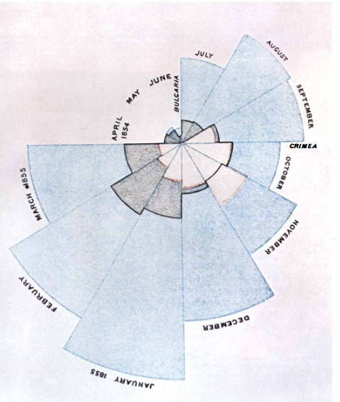

Mulheres enfrentaram desafios e discriminação, especialmente na busca por educação e reconhecimento na ciência. Fomos consideradas intelectualmente inferiores e afastadas de espaços de produção científica durante muito tempo na história.
Apesar do surgimento das universidades na Idade Média, como a Universidade de Bolonha em 1088, só obtivemos o direito de frequentá-las em 1879, se autorizadas por nossos pais ou maridos. Além das restrições de acesso a educação, muitas mulheres foram ofuscadas e tiveram o crédito de seus trabalhos científicos atribuídos a homens, como Lise Meitner e Rosalind Franklin.
Atualmente, a representação feminina na pesquisa científica é desigual, com apenas 33% de todos os pesquisadores no mundo sendo mulheres (2023). No Brasil, dos cerca de 21 mil bolsistas do CNPq, 35% são mulheres (2022). Esses números destacam a necessidade contínua de promover a igualdade de gênero e reconhecer o papel crucial das mulheres na ciência.
Hoje é o Dia Internacional das Mulheres e Meninas na Ciência, por isso, este post busca explorar a trajetória de três mulheres cientistas que desafiaram as normas de sua época e abriram caminho para outras mulheres. Uma dessas mulheres foi pioneira na criação de gráficos, outra desenvolveu a primeira linguagem de programação a utilizar palavras, e a última foi a primeira mulher a dirigir uma instituição científica na América do Sul. Espero que esses relatos inspirem e incentivem mais mulheres e meninas a seguir seus sonhos e contribuírem para o progresso científico e tecnológico.
Florence Nightingale (1820 - 1910)
Florence foi uma enfermeira que revolucionou a enfermagem através das primeiras representações gráficas de dados estatísticos. Ela começou a trabalhar aos 33 anos e, após um ano de trabalho, foi designada como enfermeira-chefe na Guerra da Crimeia.
Durante o tempo em que passou nessa guerra, ela percebeu que melhores condições de higiene nos hospitais poderiam diminuir a taxa de mortalidade dos soldados. Porém, não foi uma tarefa fácil convencer as pessoas no poder de que essa melhoria nas condições sanitárias salvaria muitas vidas pois, além de ser mulher, ela era uma civil e sua autoridade era independente das Forças Armadas. Assim, para convencer sobre a necessidade das mudanças, ela partiu para os números:
Quando Florence chegou, em fevereiro de 1855, a taxa de mortalidade era de 42,7%. Meio ano após sua chegada e a implementação de sua reforma sanitária, a taxa de mortalidade caiu para 2,2%.
Florence foi uma pioneira na representação gráfica de estatísticas, inventando os diagramas de área polar para mostrar quantas mortes poderiam ter sido evitadas se essas medidas sanitárias tivessem sido tomadas antes. Abaixo está a figura original criado pela Florence:

No diagrama acima, as partes em azul representam mortes preveníveis (como aquelas causadas por doenças contagiosas), as partes em marrom representam mortes por feridas e as partes em cinza representam mortes por outras causas. Note que o pico de mortalidade foi em janeiro de 1855, totalizando 3.168 mortes - destas 2.761 de doenças contagiosas e 83 de ferimentos -. Esse diagrama está no livro Notes on Matters Affecting the Health, Efficiency and Hospital Administration of the British Army (1858), escrito pela Florence, mas eu retirei essas informações do artigo escrito por Bernard Cohen em 1984.
Grace Hopper (1906 - 1992)

Grace foi uma pioneira na programação computacional e inspirou, e inspira, muitas mulheres na área STEM (Science, Technology, Engineering and Matematics), que ainda é predominantemente masculina.
Em 1928, Grace graduou-se em matemática e física na Vassar College, assumindo o cargo de professora de matemática na mesma instituição em 1931. Ela também formou-se mestre (1930) e doutora em matemática (1934) pela Universidade de Yale.
Em 1939, com o início da Segunda Guerra Mundial, ela interrompeu sua carreira de professora para se alistar na Marinha dos EUA. Lá, Grace foi designada para trabalhar nos computadores de Howard Aiken, tornando-se a terceira programadora, e a única mulher, a trabalhar no Mark I.
Foi ela quem propôs a criação de uma linguagem de programação exclusivamente em inglês, desenvolvendo o primeiro compilador de processamento de dados em inglês. Seu trabalho não apenas simplificou a programação de computadores, mas também abriu as portas para uma nova era de acessibilidade na tecnologia da informação.
Emília Snethlage (1868-1929)
Emília foi uma ornitóloga e naturalista, conhecida por seu trabalho na Amazônia. Ela também foi a primeira mulher a dirigir uma instituição científica na América Latina.
Em 1899, ela começou a estudar história natural na Universidade de Berlim e cinco anos mais tarde, tornou-se doutora em ciências pela Universidade de Freiburg.
Em 1905, iniciou sua trajetória como assistente de zoologia no Museu de História Natural de Berlim. Contudo, ainda no mesmo ano, mudou-se para Belém para trabalhar no Museu Paraense de História Natural e Ethnographia, atual Museu Paraense Emilio Goeldi. A partir desse momento, ela liderou diversas expedições pela Amazônia, sendo uma das mais notáveis a sua exploração entre os rios Xingu e Tapajós em 1909.
Emília foi diretora do Museu Paraense Emílio Goeldi entre 1914 e 1922, sendo assim a primeira mulher a dirigir uma instituição científica na América Latina. Entre seus trabalhos de destaque está o Catálogo de Aves Amazônicas (1914) com 1117 aves amazônicas. Helmut Sick dedicou a ela o livro Ornitologia Brasileira em 1985.
Neste post, exploramos as trajetórias de três mulheres cientistas cujas contribuições ecoam nas áreas de estatística, programação e ornitologia - temas que caracterizam o biRd blog. Que essas narrativas instiguem nosso compromisso contínuo com a igualdade de gênero e apoio às mulheres e meninas em sua jornada de busca pelo conhecimento e pela descoberta científica.
Créditos da imagem na capa do post: Freepik